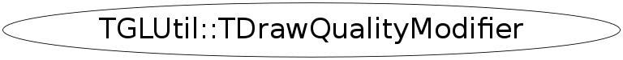

class TGLUtil::TDrawQualityModifier
TGLVertex3 3 component (x/y/z) vertex class This is part of collection of utility classes for GL in TGLUtil.h/cxx These provide const and non-const accessors Arr() / CArr() to a GL compatible internal field - so can be used directly with OpenGL C API calls. They are not intended to be fully featured just provide minimum required.
Function Members (Methods)
public:
| virtual | ~TDrawQualityModifier() |
| static TClass* | Class() |
| virtual TClass* | IsA() const |
| TGLUtil::TDrawQualityModifier& | operator=(const TGLUtil::TDrawQualityModifier&) |
| virtual void | ShowMembers(TMemberInspector& insp) |
| virtual void | Streamer(TBuffer& b) |
| void | StreamerNVirtual(TBuffer& b) |
| TGLUtil::TDrawQualityModifier | TDrawQualityModifier(Int_t dq) |
| TGLUtil::TDrawQualityModifier | TDrawQualityModifier(const TGLUtil::TDrawQualityModifier&) |
Data Members
private:
| Int_t | fOldQuality |
Class Charts
{kind=link}
{kind=link}
{kind=link}
{kind=link}

Function documentation
TGLColor& operator=(const TGLUtil::TDrawQualityModifier& )